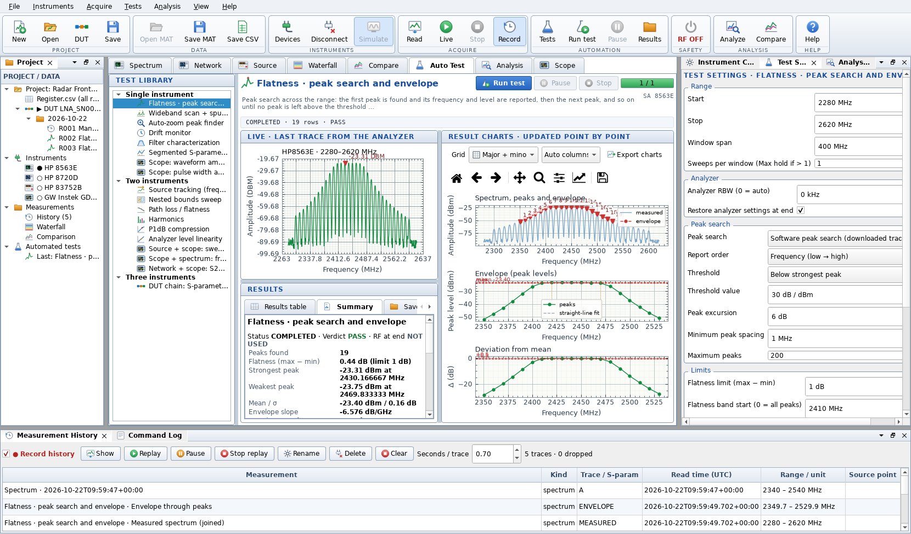
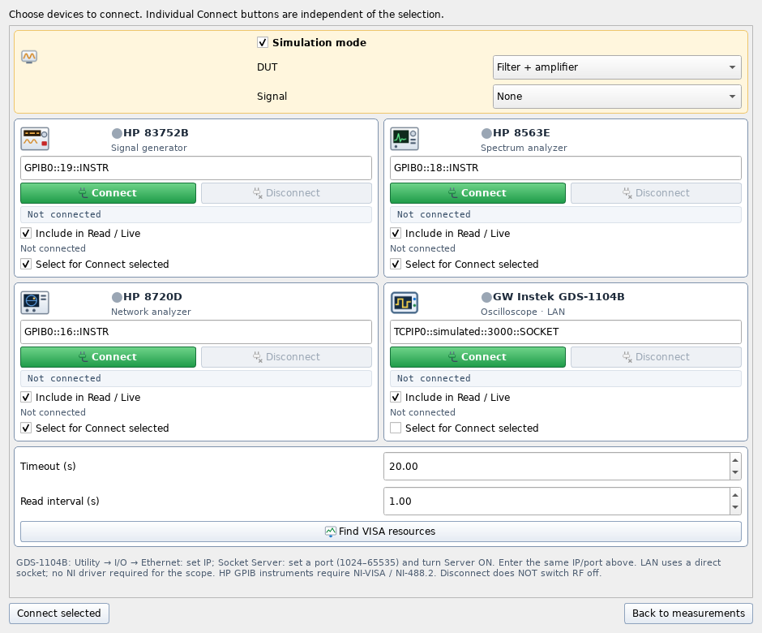
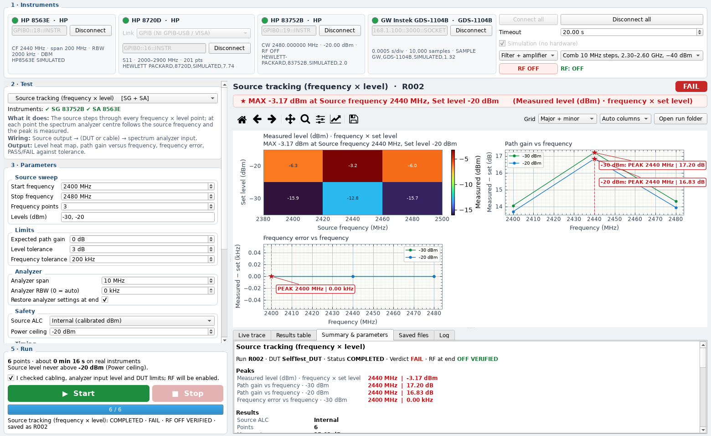
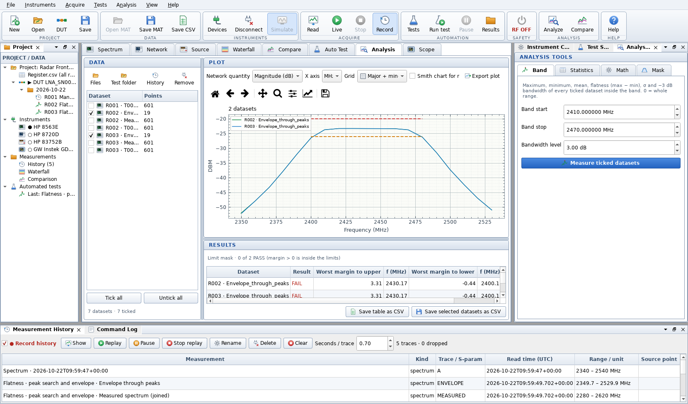
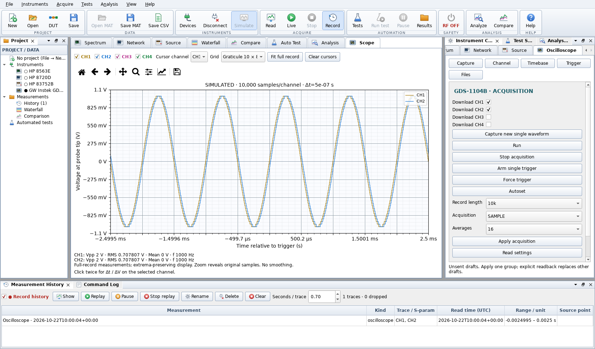

GPIB Studio: one app for a classic HP RF bench
A Windows desktop program that drives a spectrum analyzer, a network analyzer, a signal source and an oscilloscope, runs a library of automated RF tests, files every run in a project folder and analyzes the saved data. A built-in simulation mode runs everything without a single instrument.
A lab bench of classic HP RF instruments is precise but slow to use by hand: every measurement means front-panel key sequences, copying numbers off a screen and repeating it for the next frequency. The instruments all speak GPIB (IEEE-488), so a computer can do this for them, provided the software knows each instrument’s command set, its limits and its quirks.
GPIB Studio is that software for one specific bench. It reads traces and settings, changes settings and reads them back, runs complete test procedures point by point, and keeps every result in an organized project. Because instrument time is scarce, everything also works against a simulated bench that answers the same commands with synthetic data.


Instruments
- Spectrum analyzer
- HP 8563E
- Network analyzer
- HP 8720D
- Signal source
- HP 83752B (SCPI)
- Oscilloscope
- GW Instek GDS-1104B
Links
- GPIB
- NI GPIB-USB-HS, NI-VISA
- 8720D, alternatively
- Prologix USB or RS-232
- Oscilloscope
- raw LAN socket
Runs on
- OS
- Windows 10/11, 64-bit
- Python
- 3.12 x64
- Packaging
- PyInstaller, portable ZIP
The bench and how it is wired
Three instruments share one GPIB bus through an NI GPIB-USB-HS adapter and NI-VISA. The network analyzer can instead be reached through a Prologix-style GPIB-USB adapter or an RS-232 ↔ GPIB converter, which needs no NI drivers. The oscilloscope is on the LAN and is addressed through a raw socket.
Nothing connects when the program starts: no automatic connection, no preset, no RF ON. The Devices dialog has one card per instrument with its address, Connect/Disconnect and a summary of its settings, and a status light: green when connected and its settings have been read, orange when connected without settings, grey when disconnected. The program never installs drivers or changes NI MAX settings.


Read, apply, read back
The manual tabs (Spectrum, Network, Source) follow one rule: the screen shows what the instrument reported, not what the user typed.
- Read and Live never change the instrument. Read takes the current trace buffer or source settings once; Live repeats it at an interval. Neither triggers a new sweep or turns RF on; the instrument’s own Run, Single and Trigger buttons are separate.
- Typed values are drafts. A setting is sent only when its group is applied, and then the settings are read back, because instruments round values or change related ones.
- Old data is labelled. A trace that belongs to an earlier connection or setting is marked stale or PREVIOUS until it is read again.
- History. Record keeps every acquisition so it can be replayed, compared, shown as a waterfall or exported as Touchstone (S1P/S2P).
Per instrument
- 8563E trace
- 601 points
- 8563E controls
- span, RBW/VBW, detector, markers
- 8720D points
- up to 1601
- 8720D views
- dB, phase, SWR, Smith, polar
- 83752B
- CW, sweep, AM/FM/pulse, ALC
- 83752B display
- programmed state
- GDS-1104B
- 4 ch, full-record statistics
A library of 18 test procedures
Each test is a complete procedure: choose it, fill in its settings, confirm RF when the source is used, and press Run. The live trace, the result charts and the results table update point by point, and the run is saved when it ends. Tests that need rewiring part-way, such as the DUT chain, pause and ask for the new connections before they continue.
Finds every peak above a threshold in turn; the peaks form the envelope, and flatness is its spread.
Measures a wide range in consecutive 601-point windows, joins them and lists peaks above a limit line as spurs.
Starts wide, finds the strongest signal and narrows the span around it step by step, optionally ending with the frequency counter.
Repeats single sweeps at an interval and follows the strongest signal’s frequency and level over time.
Finds the passband, re-sweeps it, and reports centre, bandwidth, loss, ripple, Q, shape factor, group delay and return loss.
Joins several sweeps to go beyond the 1601-point limit; all four S-parameters can go into one S2P file.
Steps the source over a frequency × level grid; the analyzer follows and measures each point.
An inner sweep between two bounds and an outer sweep that slides, zooms or expands those bounds.
One level across frequency; loss = set level − reading, savable as a correction table.
Measures 2f, 3f, … in dBc, with an optional re-check at 10 dB more attenuation to catch analyzer-made distortion.
Raises the input step by step at each frequency; P1dB is interpolated where the gain has dropped 1 dB.
Steps the source level down; the reading should follow 1 dB per dB, and the error is plotted.
Finds the passband with the network analyzer, pauses for rewiring, then measures gain and P1dB inside that band.
Captures a new record and checks Vpp and frequency against limits, using every sample; flags clipping as inconclusive.
From one acquisition, measures the positive pulse width and the delay between two channels.
10–100 MHz; gain is 20·log₁₀ of the RMS ratio of output to input channel.
Compares the frequency measured in the time domain with the strongest spectral peak of the same sine.
Measures S21 over 50–100 MHz, pauses for reconnection, then records a pulse response; two independent records.


Every run filed, every file usable
Results are stored as project → DUT → date → run, and every automated test or manual session gets its own numbered run folder with CSV tables, MAT data, PNG charts and a PDF report. A register at project level lists every run.
The folder pattern is from the README; the file names in the last line are illustrative of the four kinds of output it lists.
The Analysis tab works on saved CSV, MAT, S1P/S2P files and run folders: band metrics (maximum, minimum, mean, flatness, σ, −3 dB bandwidth), statistics across datasets, math between two datasets and smoothing, and a PASS/FAIL mask against upper and lower limit lines. The Scope tab shows four channels with full-record statistics, peak-preserving zoom and cursors. MAT files from the author’s earlier MATLAB version can still be opened.
Saved per run
- Tables
- CSV
- Data
- MAT
- Charts
- PNG (exports also SVG, PDF)
- Report
- Network data
- Touchstone S1P / S2P




Built not to surprise the bench
- Most source changes (frequency, power, modulation, markers) require RF OFF, and the program checks that state on the instrument itself.
- RF ON always needs explicit confirmation and re-checks the programmed level against a power ceiling (default −20 dBm). The README is clear that this is a software check, not a physical limiter.
- Disconnecting, returning the source to local, or closing the program does not switch RF off; the program says so, and RF OFF is its own button.
- An output state that cannot be confirmed is shown as RF UNKNOWN rather than assumed off.
Simulation. The simulator is a fake VISA resource manager that answers the same HP-IB and SCPI commands the controllers send, so the whole stack runs unchanged. Its DUT is a 4th-order Butterworth bandpass at 2.44 GHz (80 MHz wide) followed by a 20 dB amplifier with Rapp compression and harmonics, or a plain cable; comb signals can be injected at its input. Every identity string says SIMULATED.
Testing and packaging. Both programs have a command-line self-test that runs on simulated data and writes screenshots, MAT and CSV files. A pytest suite covers analysis, readers, instruments, tests and the user interface: run on 17 Nov 2026 with the pinned dependencies, 941 of its 942 cases passed and the remaining one passed when re-run on its own, which points to a timing-sensitive test. The build script packages both programs with PyInstaller, tests each built EXE with simulated data, and writes portable ZIPs and an installer.
Simulated DUT (simulator.py)
- Filter
- Butterworth, 4th order
- Centre, bandwidth
- 2.44 GHz, 80 MHz
- Passband loss
- 1.8 dB
- Amplifier gain, Psat
- 20 dB, 12 dBm
- OIP2, OIP3
- 38 dBm, 26 dBm
- Cable
- 0.9 dB/√GHz
Code
- Application
- ≈ 14 400 lines, 40 modules
- Unit tests
- 942 cases (288 functions)
- Dependencies
- 7, versions pinned
What it does
| Area | What GPIB Studio provides |
|---|---|
| Instrument control | Spectrum, network, source and oscilloscope panels; read, live, apply-and-read-back; markers and peak tables on the plotted data |
| Connections | NI GPIB-USB-HS with NI-VISA; Prologix or RS-232 for the 8720D; LAN socket for the oscilloscope |
| Automation | 18 test procedures over one to three instruments, with live charts, PASS/FAIL against limits and guided rewiring |
| Data | Project → DUT → date → run folders; CSV, MAT, PNG, PDF report, Touchstone; register of all runs |
| Analysis | Band metrics, statistics, dataset math, smoothing, limit masks; waterfall and comparison of recorded traces |
| Safety | RF OFF checks before source changes, confirmed RF ON with a power ceiling, explicit RF UNKNOWN state |
| Without hardware | Full simulation mode, command-line self-test, unit tests, portable build tested after packaging |
Design choices worth noting
- The instrument is the source of truth. Settings are read back after every change and old data is labelled, so the screen does not show a state that only exists in the program.
- Nothing happens by itself. No automatic connection, preset or RF ON at start-up, and Read never triggers a sweep.
- One command set, two back ends. The simulator speaks the instruments’ own commands, which lets the same code be tested end to end without a lab.
- Two front ends for two kinds of user. Studio is a docking workspace for exploring; Lite is a numbered, one-window path for running a test correctly.
According to the repository’s third-party notices, GPIB Studio 2 was built on an earlier, supplied HP GPIB Python application; the libraries it uses keep their own licences.